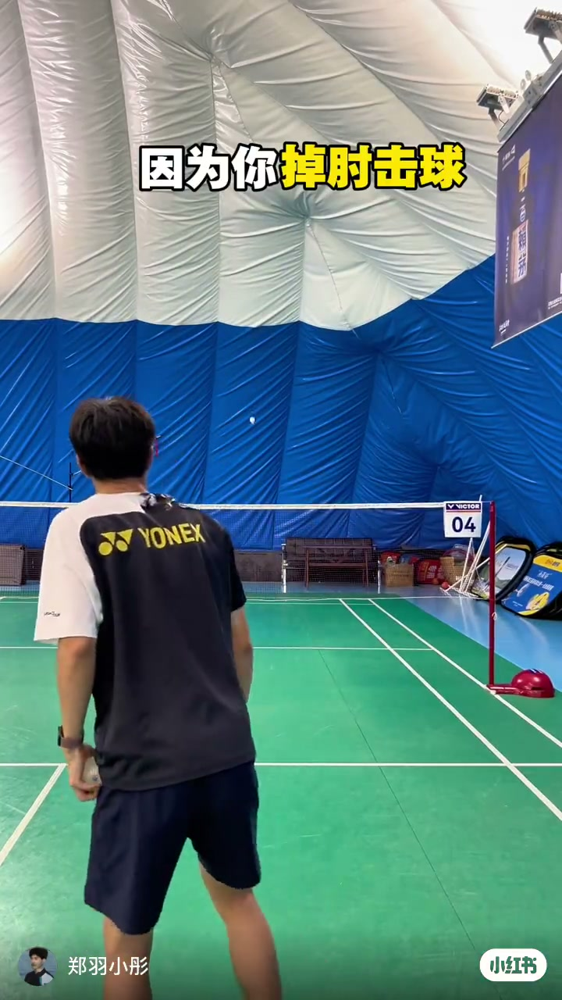
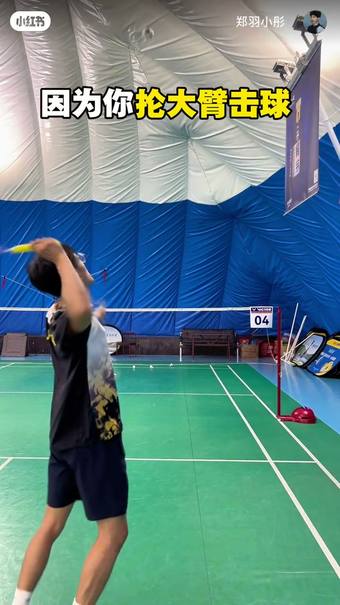
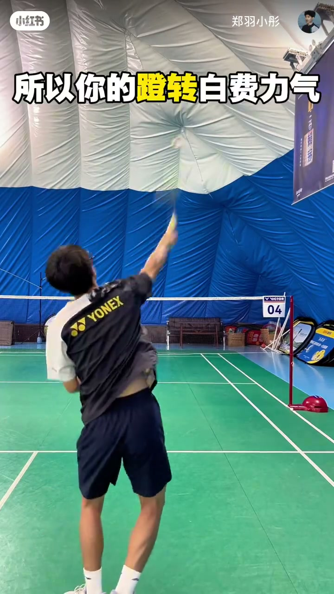

内容要点
郑羽小彤在气膜馆绿场用「因为你……所以……」的对照句，把杀球没威胁拆成三个常见错误：掉肘击球、抡大臂击球、身体发力脱节。每条错误都配黄字高亮字幕与错误动作演示，并立刻给出对策——抬肘加压、鞭打发力、身体连贯，目标是让杀球下压更足、爆发更尖更快。
知识结构
掉肘击球会让杀球轨迹像跳起来平抽；对策是多练抬肘击球，把下压力打出来。
抡大臂击球容易软绵无力；对策是多练鞭打发力，把爆发力集中到击球瞬间。
身体发力脱节时，蹬转只是空转；对策是多练身体连贯，杀球才能又尖又快。
杀球没威胁，优先查三条链路是否断开：肘是否抬起形成下压、发力是否走鞭打而非抡大臂、下肢蹬转是否接到上肢。三条各自对应一个可练动作，比空喊「再大力一点」更可执行。
00:00-00:10掉肘击球：杀球变成「跳起来平抽」
开场字幕直接点名错误：「因为你掉肘击球」。教练背对镜头站在气膜馆绿场，Yonex 球衣清晰，球在身前，画面用黄字把「掉肘」标出来。
口播把后果说得很具体：掉肘之后，杀球会像「跳起来平抽」——有高度、却缺少向下的压迫感，威胁自然变弱。对策一句收束：「多练抬肘击球，下压力足。」

00:10-00:20抡大臂击球：动作大，球却软
第二组对照针对「抡大臂」。教练把右臂大幅后拉，做出半径很大的引拍；字幕黄字高亮「抡大臂」。
原因句是「因为你抡大臂击球，所以你的杀球软绵无力」——看起来很使劲，力量却散在大臂挥扫里。对策换成鞭打链条：「多练鞭打发力，爆发力足。」把力量延迟到击球点释放，而不是全程抡臂。

00:20-00:29身体发力脱节：蹬转白费力气
第三条盯住全身协作：若「身体发力脱节」，下肢蹬转就接不上拍头，「蹬转白费力气」。画面里教练仍在过头击球瞬间，字幕把「蹬转」标黄。
收束对策是「多练身体连贯，这样你的杀球又尖又快」——尖指下压线路，快指爆发传递。整条视频三次重复「因为你……所以……／多练……」结构，便于记忆与自检。

完整转录（6段）
以下文本由 Whisper medium 模型自动转录，可能存在少量识别误差，已尽可能修正。
因为你吊肘击球,所以你的沙球向跳起来平抽。
多练抬肘击球,下压力足。
因为你轮大臂击球,所以你的沙球软绵无力。
多练鞭打发力,爆发力足。
因为你身体发力脱节,所以你的蹬转白费力气。
多练身体连贯,这样你的沙球又尖又快。